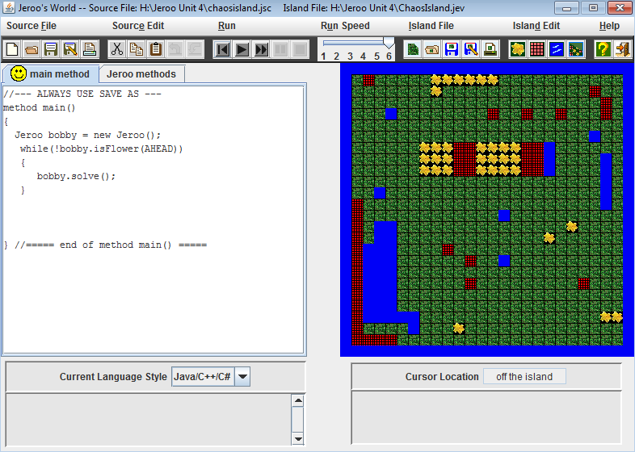

Jeroo Unit 1
Description
In this unit we did labs: Nets, Fenced In, and Diamond. The main idea from this unit was learning the basics of jeroo. This included creating the jeroo and understanding simple commands like hopping and tossing. In addition, we learned how to run the program and open previous programs
Concepts Learned:
- object instantiation
- constructors
- how to make the jeroo do basic movements like hop and toss
Jeroo Unit 2
Description
In this unit we did labs: Box, Flowers, LED, Water, and Escape. The main idea from this unit was learning about methods. We learned about writing and calling methods from the main method. This was very important since methods are a very important part of java.
Concepts Learned:
- writing methods
- calling methods
Jeroo Unit 3
Description
In this unit we did labs: Flowers2, Pinball, Spiral, Water, and Lockup. The main idea from this unit was learning about loops. Loops are very beneficial since they not only save time, but they also make the code more legible. We also learned about && and || which make loops easier to write.
Concepts Learned:
- while loops
- boolean methods
- conditionals like &&, ||
Jeroo Unit 4

Description
In this unit we did labs: Spiral, Alley Run, Chaos, and Recursive Box. The main idea from this lab was learning about if-statments and recursion. If statements allow users to tell whether a statement is true of false. Recursion is really cool and calls methods from within that method.
Concepts Learned:
- if statements
- if-else statements
- recursion